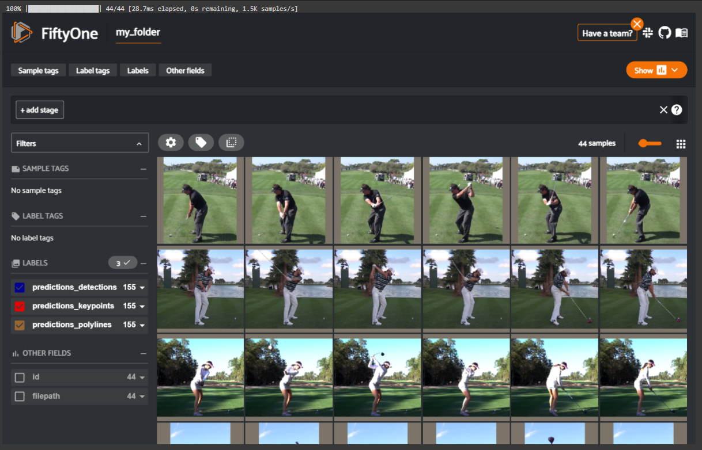
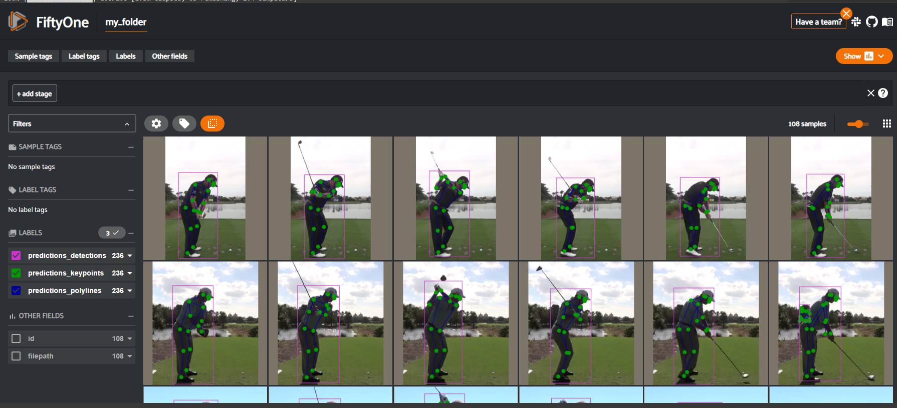
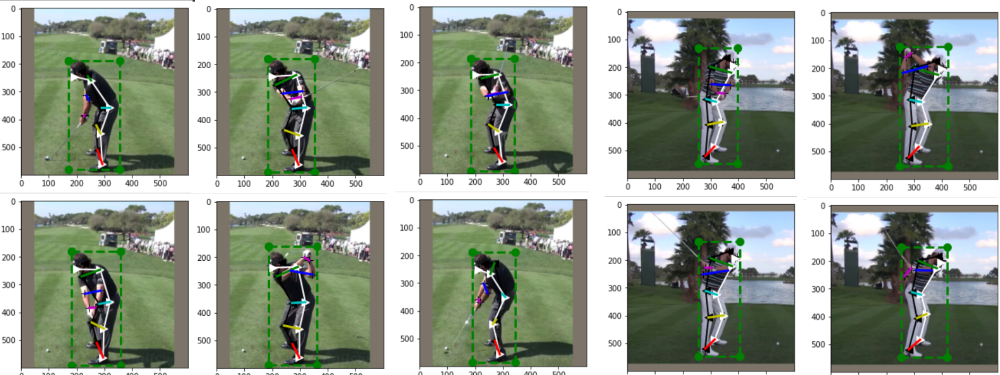

!pip uninstall opencv_python_headless
!pip install opencv-python-headless==4.5.4.60
!pip install fiftyone
import fiftyone as fo
Golf Swing Part III- Using pre-trained models- FiftyOne and Streamlit App
Using Python and pre-trained to identify parts of the body and club during a golf swing. Uses both FiftyOne and creates an app using Streamlit
- toc: true
- badges: true
- comments: true
- categories: [Neural networks,FiftyOne, Golf Swing, Python]

Overview
In a previous part Part 1 a neural network model was used to find positions on the body during a golf swing. The model was not particularly succesful, perhaps due to the lack of data (specific to the golf swing) that was used to train the model on.
This problem can be got around by using a model that has been pre-trained on human gestures. Several pre-trained models can be found here Pre-trained models. I tried a few and found the chose the model keypoint-rcnn-resnet50-fpn-coco-torch worked well with this data. Link to model and Paper of model.
The input to the model is taken from Part 2 which separated a golf video into a series of images of the swing.
In this page I use the model with both fiftyOne and as a streamlit app.
youtube: https://youtu.be/Q0BB0huWb6s https://youtu.be/Q0BB0huWb6s
Code
The code can be run on google colab here COCO50_1 (works best on google chrome)
Installs and imports
Upoad some images to the workspace
Untar and create a dataset object from them
And look at them
The image files can be found here GC2.tgz
import tarfile
my_tar = tarfile.open('/content/GC2.tgz')
my_tar.extractall('/content/my_folder') # specify which folder to extract to
my_tar.close()import fiftyone as fo
import fiftyone.zoo as foz
import fiftyone as fo
name = "my_folder"
dataset_dir = "/content"
# Create the dataset
dataset = fo.Dataset.from_dir(
dataset_dir=dataset_dir,
dataset_type=fo.types.ImageDirectory,
name=name,
)
session = fo.launch_app(dataset)
This screen is interative and allows us to look at the images
Load the trained model
Apply the model to the dataset
View the results
model = foz.load_zoo_model("keypoint-rcnn-resnet50-fpn-coco-torch")
# label_types=["classification", "classifications", "detections", "instances", "segmentations", "keypoints", "polylines", "polygons", "scalar"],
dataset.apply_model(model, label_field="predictions",label_types='predictions_keypoints')
session = fo.launch_app(dataset)
youtube: https://youtu.be/dkxtOBWD7Vw
Extract data from the model
We might want to use the data from the model outside of fiftyOne.
In the following I extract the data so that it can be plotted.
def plotPredOne(i):
import numpy as np
import matplotlib.pyplot as plt
import matplotlib.image as mpimg
img = mpimg.imread(i['filepath'])
#need to take account of more than one person in image
points1 = np.array(i['predictions_keypoints']['keypoints'][0]['points'])
adjPts = np.shape(img)[0]
box1 = np.array(i['predictions_detections']['detections'][0]['bounding_box'])
box1=box1*adjPts
# Bboxes are in [top-left-x, top-left-y, width, height] format
box2=np.array([
[box1[0], box1[1]],
[box1[0] +box1[2] ,box1[1] ],
[box1[0] +box1[2] ,box1[1] +box1[3]] ,
[box1[0] ,box1[1] +box1[3]],
[box1[0], box1[1]]
])
plt.figure()
plt.imshow(img)
plt.plot(points1[:,0]*adjPts,points1[:,1]*adjPts, '+k',markersize=10,linewidth=3)
plt.plot(box2[:,0],box2[:,1], '--og',markersize=10,linewidth=3)
#back of body
v=[4,6,12,14,16]
plt.plot(points1[v,0]*adjPts,points1[v,1]*adjPts, '-k<',markersize=10,linewidth=2)
#front of body
v=[0,5,11,13,15]
plt.plot(points1[v,0]*adjPts,points1[v,1]*adjPts, '-w>',markersize=10,linewidth=2)
vects = np.array([[ 5,6],#shoulders also 4?
[11,12], #hips
[13,14], #knees
[15,16],#heels
[7,8],#elbows
[9,10],#hands
])
mak='gcyrmb'
for iv,v in enumerate(vects):
plt.plot(points1[v,0]*adjPts,points1[v,1]*adjPts, '-'+mak[iv],markersize=10,linewidth=3)for iii,i in enumerate(dataset):
plotPredOne(i)
Convert into a Streamlit App
To convert to a streamlit app I will use the PyTorch module rather than the fiftyOne.
I will also keep it simple by loading only 3 images- start of swing, top of backswing and at impact- and modeling these at the start of the load part of the app.
The app will then just plot the images as shown above.
Imports and give the app a title
import streamlit as st
import torch
import torchvision
from torchvision import transforms
from PIL import Image
import tarfile
import os
from torchvision.io import read_image
import numpy as np
import matplotlib.pyplot as plt
import matplotlib.image as mpimg
st.title('Golf Swing')Loading the data & applying the model
Create a function to load data and model the data
load_data(choi)
Images are loaded from Gc2.tgz
my_tar = tarfile.open(cda2+'/GC2.tgz')
The particular model to use is loaded
model = torchvision.models.detection.keypointrcnn_resnet50_fpn(pretrained=True)
model.eval()
Images are loaded and converted to a tensor
number_img = Image.open(cda2+'/images/'+image_filename)
convert_tensor = transforms.ToTensor()
And predictions are made
predictions=model(imgTens)
In the main body the function is called
data_load_state = st.text('Loading data...')
predictions,imgLocAll,cda2=load_data(1)
data_load_state.text("Loaded data (using st.cache)")
# So only have to do this when app launches
@st.cache()
# the function 'choi' is the video file to use
def load_data(choi):
# the images are in the GC2.tgz file- this needs to be untarred first
cda = os.getcwd()
cda2=cda
my_tar = tarfile.open(cda2+'/GC2.tgz')
my_tar.extractall(cda2) # specify which folder to extract to
my_tar.close()
# Create a variable of the image names and which video they are part of
imgAll=[]
vidAll=[]
i=0
last1=' '
for xx in os.listdir(cda2+'/images/'):
if xx[-1]=='g':
imgAll = np.append(imgAll, xx)
if xx.split('_')[1]!=last1:
i=i+1
vidAll=np.append(vidAll,i)
last1=xx.split('_')[1]
vidAllUnq=np.unique(vidAll)
# Load the model to be used
model = torchvision.models.detection.keypointrcnn_resnet50_fpn(pretrained=True)
model.eval()
# Select the images to be used
imgs = imgAll[vidAll==vidAllUnq[choi]]
# make sure in correct order
aa=[int(xx.split('_')[-1].split('e')[1].split('.')[0]) for xx in imgs]
ind=sorted(range(len(aa)), key=lambda k: aa[k])
imgs=imgs[ind]
# create tensor of images to be used- here 3 (images) X width X height
imgTens=[]
imgLocAll=[]
# Just use the start, top and impact of swing
iiUse=[0,3,5]
for ii,image_filename in enumerate(imgs):
# print(cda2+'images/'+image_filename)
if ii in iiUse:
number_img = Image.open(cda2+'/images/'+image_filename)
convert_tensor = transforms.ToTensor()
number_img=convert_tensor(number_img)
imgTens.append(number_img)
imgLocAll.append(image_filename)
# Make the predictions
predictions=model(imgTens)
return predictions,imgLocAll,cda2
# Outside the function, the load function is called
data_load_state = st.text('Loading data...')
predictions,imgLocAll,cda2=load_data(1)
data_load_state.text("Loaded data (using st.cache)")Streamlit user interface
User selects the images from this box:
choice=imgLocAll
imgSEL = st.sidebar.selectbox( 'Select how to search', choice)
Display to user what swing it is:
SwingPos=['Start','Back','Through']
SwingPos[numSEL]
And at the end of the file the figure is displayed in streamlit with the following command:
st.pyplot(fig)
The plot part
Extract the data from the model about different parts of the body:
points1=np.array([x.detach().numpy()[0:2] for x in predictions[numSEL]['keypoints'][0]])
The plot lines plot different parts of the body, the following plot the back of the body
v=[4,6,12,14,16]
plt.plot(points1[v,0]*adjPts,points1[v,1]*adjPts, '-w<',markersize=10,linewidth=2)
# load the images so can be plotted
img = mpimg.imread(cda2+'/images/'+imgSEL)
# the image selected
numSEL=[oo for oo,x in enumerate(choice) if x==imgSEL][0]
# get data from model as a numpy array - here want keypoints other info is also available
points1=np.array([x.detach().numpy()[0:2] for x in predictions[numSEL]['keypoints'][0]])
# create a plot
fig=plt.figure(figsize=(7,7))
plt.imshow(img)
# Plot across back and front of body
adjPts=1
#back of body
v=[4,6,12,14,16]
plt.plot(points1[v,0]*adjPts,points1[v,1]*adjPts, '-w<',markersize=10,linewidth=2)
#front of body
v=[0,5,11,13,15]
plt.plot(points1[v,0]*adjPts,points1[v,1]*adjPts, '-k>',markersize=10,linewidth=2)
# Plot over lines on body
vects = np.array([[ 5,6],#shoulders also 4?
[11,12], #hips
[13,14], #knees
[15,16],#heels
[7,8],#elbows
[9,10],#hands
])
mak='gcyrmb'
for iv,v in enumerate(vects):
plt.plot(points1[v,0]*adjPts,points1[v,1]*adjPts, '-'+mak[iv],markersize=10,linewidth=3)
LEG=['Back','Front','Shoulders','Hips','Knees','Heels','Elbows','Hands']
plt.legend(LEG)
for x in points1:
plt.plot(x[0],x[1],'+b')Requirements.txt
Finally streamlit needs a requirements text in the GitHub repository
torch
torchvision
Pillow
matplotlib
numpyThe Streamlit App
youtube: https://youtu.be/Q0BB0huWb6s